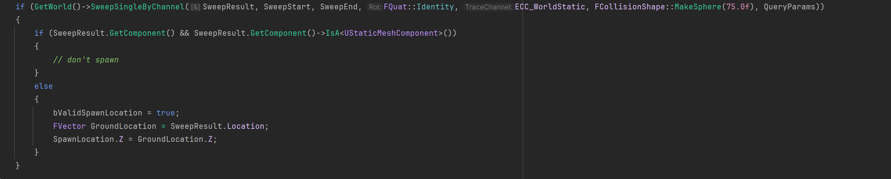
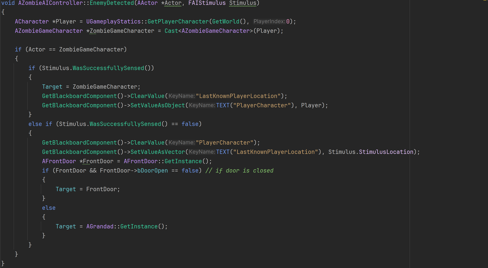
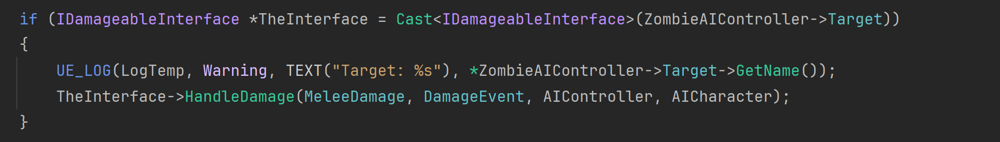
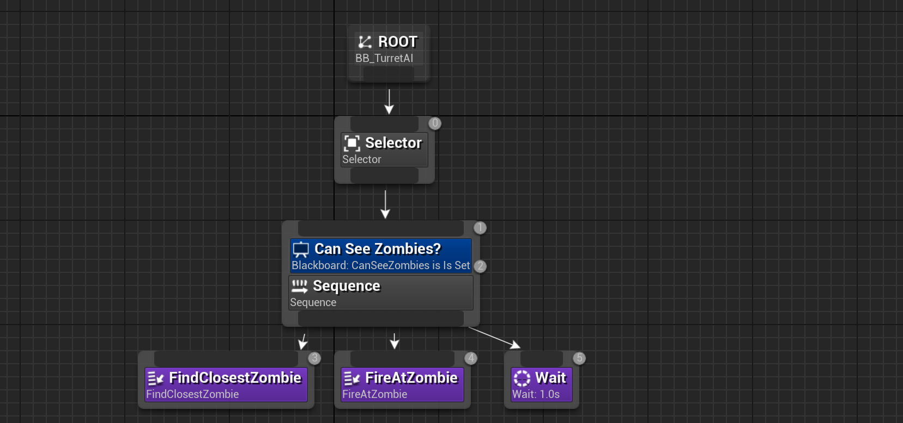
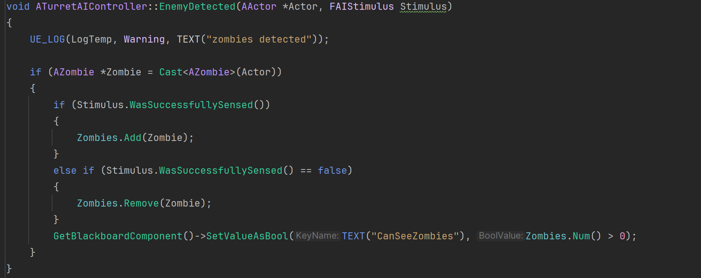
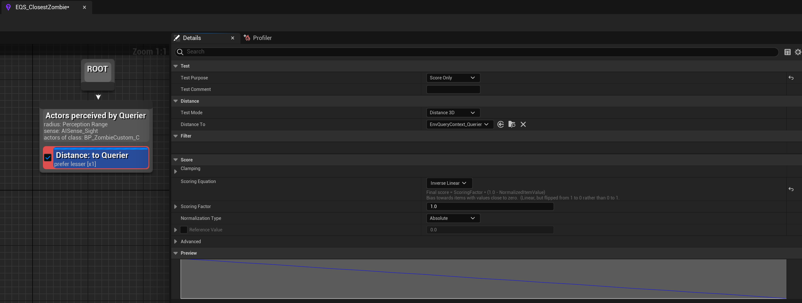
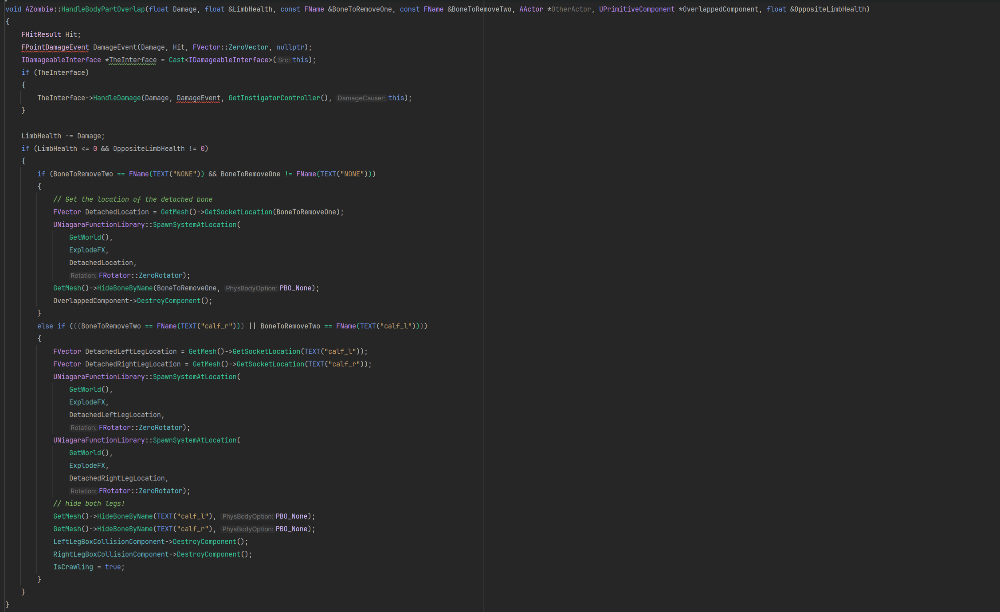
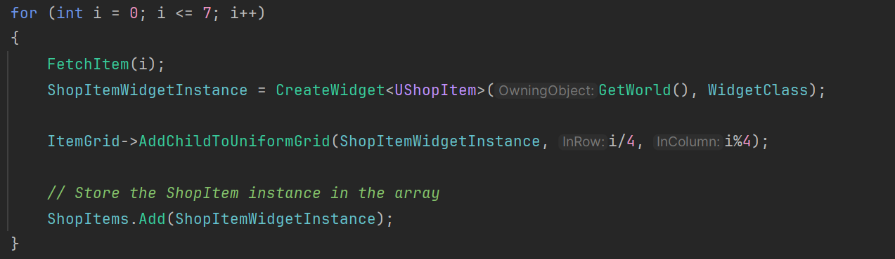

Defend Grandad
Overview

General Overview
Defend Grandad is a solo project with a focus on programming gameplay features. Other than the 3D models, animations and sound effects, I am creating everything.
Used Languages/IDEs
Timeframe
Main Systems Overview
Game Mode
Overview
The aim of the game is to defend ‘Grandad’ - he is unable to move. Zombies will try and kill him by default. However (if seen), the zombies will move to the player and try to kill them. If the player or ‘Grandad’ die, the game ends. This is a round-based game, with increasing numbers of zombies spawning each round. If you beat the final round (currently set to round 10), you win!
Explore
There are houses scattered around the map with player upgrades (perks) and weapons. The player must choose wisely when to travel, as if unattended for too long, ‘Grandad’ will be killed.
Earn Points
Shoot zombies to earn points to spend on weapons, perks or at the shop. Points are displayed in the bottom left of the screen.
Player Health
If a player is damaged by a zombie, this will drain the health bar on the bottom right of the User Interface (UI). If this drains completely the player dies. Once the player has less than 50% health a flickering blood overlay will appear on the screen. A health regeneration timer delegate is bound to a function and called if the player takes any damage and is cleared once at full health.

Zombie Spawning
In order to get the zombies to spawn on the surface, a sphere trace was used. This worked much better than using a line-trace as it scans a much larger area in the trace. A line trace was not a viable option as it would often spawn the zombies under the map.
Boss Rounds
There are fire-boss zombies that spawn once every five waves. These deal twice the amount of damage as regular zombies and use different sound effects. These will be improved in the future.
Weapon System
Overview
As it stands there are three weapons in the game:
- Pistol
- Shotgun
- Assault Rifle
Projectiles
Each weapon has an associated projectile, therefore weapons vary in damage and bullet drop-off.
State Design Pattern
The player character uses the state design pattern to encapsulate the behaviour associated with that state. This not only makes the PlayerCharacter class easier to read but also makes it easier to apply logic to a given state. Player states include:
- Idle
- Aiming
- Fire
- Reloading
- Swapping
AI
Overview
There is AI for zombies, dogs and turrets. Dogs and turrets can be purchased from the in-game shop. The zombie has its own AI controller, whereas the dog and turret share one. Each character with AI has an AIPerceptionComponent and only uses sight for perception.

Zombie: Behaviour Tree
The zombies have a Behaviour Tree (BT), where keys are set using the AI Controller. If the zombie has not seen the player, then they will move to ‘Grandad’ to kill him. However, if the player has purchased a front door from the shop, and the front door is closed, the zombie will destroy the front door before moving to the Grandad. If the player is in the zombie’s vision, the zombie will move to the player and attack. However, if the player leaves the zombie’s vision, it will move to where the player was last seen and then go back to hunting ‘Grandad’.

Zombie: AI Controller
This EnemyDetected function is bound to the OnTargetPerceptionUpdated delegate, therefore this code is executed whenever a player enters and exits the zombie’s sight. The ‘PlayerCharacter’ blackboard key is set and cleared, dependent on whether the player is successfully sensed.

Zombie: Attack Player
For the Attack Player node in the BT, this is how the player is damaged. It casts the target (i.e. the character, door or ‘Grandad’) to the DamageableInterface, and then calls HandleDamage.

Dog: Behaviour Tree
If the dog cannot see a zombie, it will move to a random location nearby and wait. If it sees a zombie, it will search for the closest one using EQS and attack.

Turret: Behaviour Tree
The turret BT uses the same EQS as the dog but it only has one branch under the Selector node, therefore if the turret doesn’t see anything it will do nothing.

Friendly: AI Controller
Both the dog and the turret use the same AI controller. Every time perception is updated a zombie is either added or removed from an array of zombies, and the ‘CanSeeZombies’ blackboard key is updated based on this.

Friendly: EQS
Unreal’s EQS is used to find the closest zombie out of the zombies in the dog or turret’s perception.
Dismemberment System
Overview
When shooting a zombie, you are able to remove their head, arms and legs.
Collision Boxes
Each body part has a collision box, and the OnComponentBeginOverlap delegate is bound to its respective function.

Destroying Limbs
The least computationally expensive way of destroying a zombie’s limbs that was found involved hiding the bone and spawning a blood Niagara System to create the effect. A design choice was made so that if a zombie loses one arm, it cannot lose the other - so it can attack the player at all times. Additionally, if a zombie loses one leg it will lose both and move into a crawling state.
Shop System
Overview
The character is able to access Grandad’s shop by moving to his location. Here you are able to buy a front door for the house (the zombies destroyed the last one!), weapon ammo, a turret, and even a dog!

Data Table
I made the design choice of using a data table to populate shop items.

Adding Shop Items
This code dynamically adds the shop items to the Uniform Grid, so they are displayed in the shop. This makes it much easier than placing the items in the UI manually.